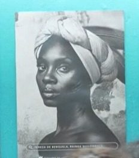
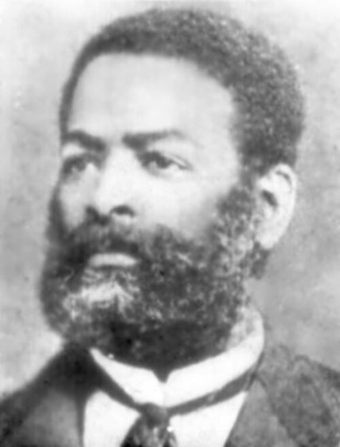
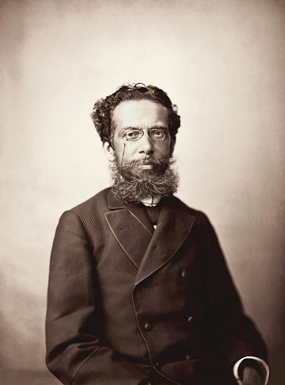

1655–1695
Zumbi dos Palmares
Liderou o Quilombo dos Palmares, na Serra da Barriga (AL), a maior comunidade de resistência à escravidão do período colonial. Morreu em 20 de novembro de 1695, e é por isso que a data é essa.
20.11 Dia Nacional de Zumbi e da Consciência Negra
Todo 20 de novembro o Brasil lembra de Zumbi. Só que lembrar uma vez por ano não adianta nada se na segunda-feira alguém continua rindo de um colega por causa da cor ou do cabelo.
Este site serve pra isso: olhar a história negra de frente, entender como o racismo funciona e decidir o que você faz quando ele aparece na sua frente. Se você é negro, a história é sua. Se não é, escute mais do que fala.

“Numa sociedade racista, não basta não ser racista. É preciso ser antirracista.”
O 20 de novembro é o dia em que Zumbi morreu, em 1695. O movimento negro escolheu essa data nos anos 1970 pra fugir do 13 de maio, dia da Lei Áurea. A ideia era simples: o povo negro não ficou esperando ser libertado. Fugiu, montou quilombo, foi pra Justiça, escreveu, se organizou. Durante séculos.
Foram cerca de 4,8 milhões de africanos trazidos à força pro Brasil, mais do que pra qualquer outro país. A Lei Áurea, em 1888, acabou com a escravidão no papel e só. Ninguém ganhou terra, escola nem emprego. A conta continua aberta.
Hoje, 55,5% dos brasileiros se declaram pretos ou pardos (Censo 2022). Mesmo assim, mais de 7 em cada 10 vítimas de homicídio são negras, e pessoas negras ainda são raras nos cargos de chefia, nas universidades mais disputadas e na TV. Coincidência? Não. Isso tem nome: racismo.
A escola costuma contar a história negra começando pela escravidão, como se não existisse nada antes nem depois. Comece por quem criou, ensinou, lutou e mudou o país. Onde há foto, ela está aqui.
Liderou o Quilombo dos Palmares, na Serra da Barriga (AL), a maior comunidade de resistência à escravidão do período colonial. Morreu em 20 de novembro de 1695, e é por isso que a data é essa.

Comandou o Quilombo do Quariterê, em Mato Grosso, por cerca de vinte anos. Cuidava da defesa, da produção e da política do quilombo. O 25 de julho é o Dia Nacional de Tereza de Benguela e da Mulher Negra.

Nasceu livre e, aos 10 anos, foi vendido ilegalmente como escravizado. Aprendeu a ler sozinho, virou advogado e tirou centenas de pessoas da escravidão nos tribunais.

Um dos maiores escritores em língua portuguesa. Era negro, vinha de família pobre e criou a Academia Brasileira de Letras, da qual foi o primeiro presidente. Por muito tempo apareceu nos retratos com a pele clareada.

Catava papel e morava na favela do Canindé, em São Paulo. Escreveu o diário Quarto de Despejo (1960), que vendeu muito e foi traduzido pra vários idiomas.

Fundou o Teatro Experimental do Negro em 1944, pra que atores negros fossem protagonistas e não figurantes. Foi deputado e senador.

Filósofa e antropóloga. Mostrou que racismo e machismo andam juntos e criou o conceito de amefricanidade, que valoriza a herança africana em toda a América.

Filósofa, fundou o Geledés – Instituto da Mulher Negra. No Brasil, foi ela quem mais desenvolveu a ideia de epistemicídio: o apagamento do saber e da inteligência da população negra, principalmente na escola.

Mineira, trabalhou como empregada doméstica antes de virar uma das escritoras mais lidas do país. Inventou a escrevivência: escrever a partir da vida de mulheres negras.

Socióloga e vereadora no Rio, mulher negra, lésbica, criada na Maré. Defendia os direitos humanos e a população das favelas. Foi assassinada em 14 de março de 2018.
E tem muita gente que nunca saiu em livro: a professora, o porteiro, a rezadeira, a mãe que criou quatro filhos sozinha. Quantos nomes dessa lista você já conhecia? Se foram poucos, o motivo tem nome, e a próxima parte fala dele.
Epistemicídio quer dizer matar o saber: apagar, desqualificar ou destruir o conhecimento de um povo.
A palavra veio do sociólogo português Boaventura de Sousa Santos, que falava do que o colonialismo fez com os saberes de povos não europeus. Aqui no Brasil, Sueli Carneiro mostrou como isso funciona com a população negra, principalmente na escola. Quando o saber de um grupo é tratado como menor, o grupo inteiro passa a ser tratado como menor.
Os africanos e seus descendentes sabiam curar, plantar, minerar, cozinhar, construir. Nada disso entrou como ciência. Virou folclore, superstição, “coisa de macumba”, enquanto o saber europeu ficou com o título de conhecimento.
Esperar menos do aluno negro, achar que ele “não leva jeito” ou se espantar quando ele vai bem: “nossa, como você é inteligente!”. Quem ouve isso o tempo todo acaba acreditando.
A história negra só aparece a partir da escravidão. Autores negros, quase nunca. O Brasil parece ter sido construído por outras pessoas.
Machado de Assis com a pele clareada nos retratos. Luís Gama esquecido como advogado. Carolina Maria de Jesus lembrada como “a favelada que escreve”, quase nunca como escritora. A pessoa só é aceita quando se parece com quem manda.
Escola com menos recursos, falta de livro, vestibular difícil de entrar. Sem acesso, o saber não circula, e a falta de reconhecimento vira “prova” de que ele nunca existiu.
Muita gente sofre, ou machuca, sem saber o nome do que está acontecendo. Doze palavras pra enxergar melhor, com o racismo no centro.
Tratar alguém pior (ou melhor) por causa da cor da pele e da origem. Não é opinião nem exagero: é um sistema que trata o branco como padrão e o negro como exceção. Raça não existe biologicamente. O racismo existe, e machuca.
Quando o racismo está nas regras do dia a dia, e não só na boca de gente mal-intencionada. Quem tem escola boa, quem é seguido na loja, quem é chamado pra entrevista. Ninguém precisa xingar ninguém pra isso funcionar. Basta deixar tudo como sempre foi.
É a piada. O apelido sobre cor ou cabelo, o “tava só brincando”. Quem faz ri; quem ouve aprende a rir junto pra não virar problema. Não existe graça que dependa de humilhar um grupo inteiro.
Julgar antes de conhecer. Pega-se um rótulo (cor, religião, corpo, sotaque, bairro) e cola-se numa pessoa inteira. Quando vira ação, vira discriminação. Ninguém nasce com isso: a gente aprende, e por isso dá pra desaprender.
Palavras que atacam alguém pelo grupo a que pertence, e não pelo que fez. Transformam gente em “esses aí” e abrem caminho pra violência. Racismo é crime inafiançável no Brasil. Palavra não é vento. Fica.
Humilhar pela tela: comentário, print, montagem, perfil falso. Muitas vezes o alvo é o cabelo, a cor ou o nome. Não tem hora pra acabar e se espalha em minutos. Quem curte e repassa também está agredindo.
A violência que não faz barulho. O grupo que muda de assunto quando você chega, o trabalho em que ninguém te chama, o único aluno negro da sala que nunca é escolhido. Ninguém encosta em ninguém, mas a mensagem é clara: você não pertence.
Tudo o que fere o corpo, a cabeça ou a dignidade de alguém. Empurrão, ameaça, apelido repetido, silêncio imposto. Quase sempre começa como brincadeira. Quem não corta o começo ajuda a escrever o final.
Não aceitar que o outro pense, creia ou viva diferente. No Brasil, candomblé e umbanda estão entre as religiões mais atacadas. Tolerar não é concordar: é aceitar que o outro exista sem pedir a sua licença.
Sentir um pouco do que o outro sente e deixar isso mudar o que você faz. Não é pena. Quem nunca passou por racismo começa escutando quem passou, sem mandar a pessoa “não ligar”, e acreditando no que ela conta.
Tratar o outro como alguém inteiro. Não precisa gostar, concordar nem ser amigo. Só não humilhar e não decidir por ele quem ele pode ser. É o mínimo, e o mínimo já muda muita coisa.
Agir, e não só evitar ofender. Cortar a piada, ficar do lado de quem sofre, estudar a história, ler autores negros, reparar em quem está (e em quem não está) na sala, no time, no livro. Ninguém é antirracista de uma vez: é prática de todo dia.
Leia devagar. Ninguém vai ver suas respostas, então responda só pra você. As perguntas que dão vontade de mudar de assunto são as que mais importam.
Olhar pras próprias atitudes não é se condenar. Dá trabalho e exige coragem, e é por aí que qualquer mudança começa.
Onde houver ódio, que eu leve o amor. Onde houver ofensa, que eu leve o perdão.
Escolha a atitude que mais parece com a sua. Você vê na hora o que ela provoca em quem está do outro lado, porque toda escolha chega em alguém.
Quem sofre racismo ouve muito “deixa pra lá”, “é brincadeira”, “tá vendo coisa onde não tem”. Aos poucos, passa a duvidar da própria dor. Quando alguém diz “eu vi, foi racismo”, isso muda. A dor continua, mas deixa de ser só dela.
Quem agride precisa de plateia, de risada e de silêncio. Se você não é negro, não é seu papel falar no lugar de quem é. É seu papel não rir, não repassar, ficar do lado, abrir espaço e deixar a pessoa contar a própria história.

Nenhuma exige heroísmo. Todas pedem uma decisão pequena, tomada na hora em que seria mais fácil não decidir.
Escute antes de dar conselho. Acredite no que a pessoa conta e não solte um “não liga” nem um “tá exagerando”. Quem vive racismo sabe reconhecer. Muitas vezes basta ouvir: “eu acredito em você”.
Quem ri, filma ou curte está dentro da agressão. Você não precisa brigar: um “isso não tem graça” ou ficar do lado de quem foi alvo já tira o palco de quem agride. Calar também é escolher um lado.
Contar pra um adulto de confiança, pra coordenação, pra pastoral, pra família ou pro Disque 100 não é dedurar. É proteger. Racismo é crime, e segredo só ajuda quem faz.
Não repasse o print nem pra “mostrar como é absurdo”: isso espalha a humilhação. Denuncie na plataforma, guarde as provas pra mostrar a um adulto, bloqueie, e não responda no mesmo tom.
Muita expressão do dia a dia vem carregada de racismo: “denegrir”, “cabelo ruim”, “serviço de preto”, “a coisa tá preta”. Troque, sem drama. Se errar, peça desculpa de verdade e aprenda. Mudar de atitude dá trabalho, e é sinal de força.
Chame pra sentar junto, pro grupo, pra conversa. Dê espaço pra vozes negras na sala, no trabalho em dupla e no livro que você indica. Um convite simples pode ser a primeira coisa boa do dia de alguém.
Você pode ligar mesmo que só queira conversar.
Em risco imediato ou emergência, ligue 190 (Polícia) ou 192 (SAMU).
Mande apoio a quem sofre, conte um relato ou assuma um compromisso antirracista. Sua mensagem aparece na hora pra todo mundo que abrir esta página.